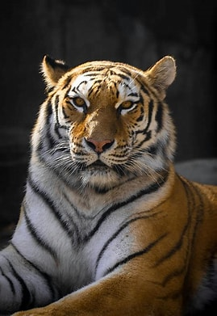
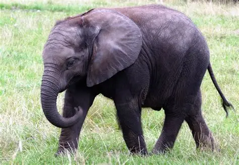
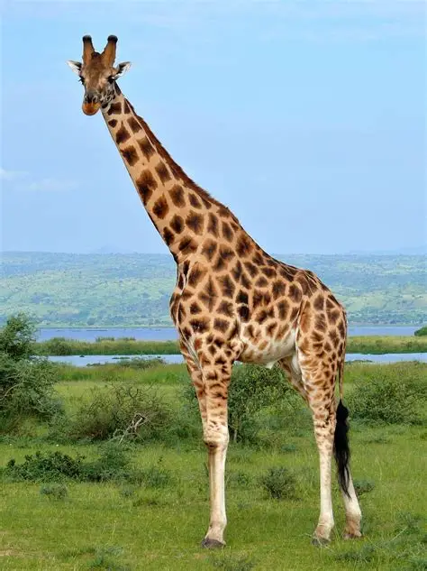
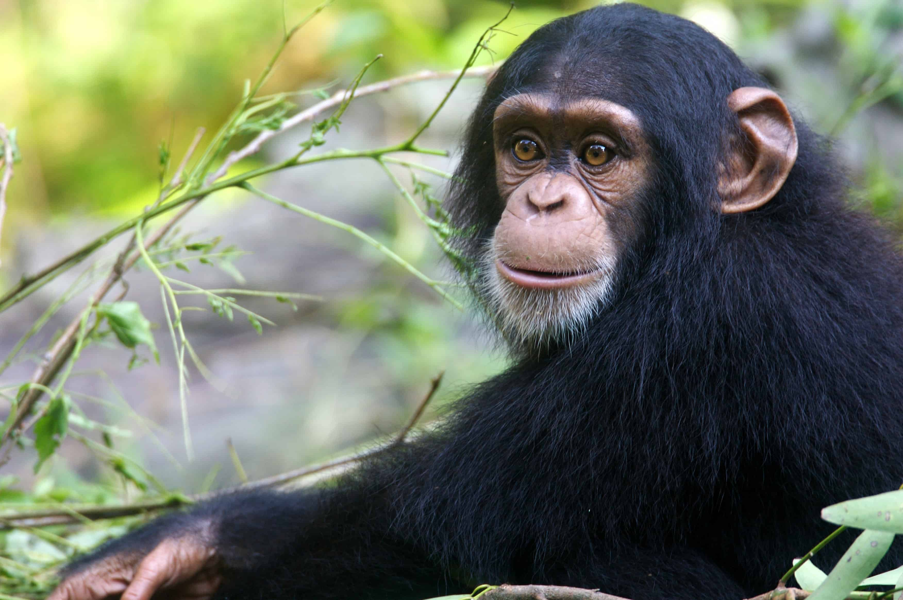
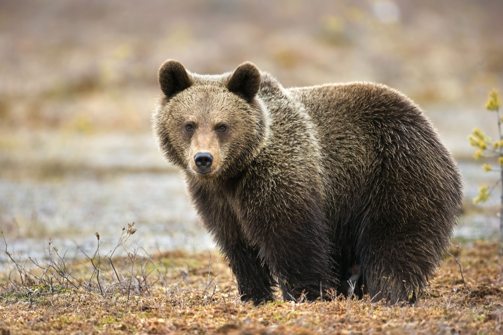

Types Of Animals
Animals
Tiger
The Bengal tiger, scientifically known as Panthera tigris tigris, is one of the most magnificent and powerful big cats in the world. Native to the Indian subcontinent, it is renowned for its striking orange coat adorned with bold black stripes, each pattern as unique as a fingerprint.

Lion
The lion, often hailed as the "king of the jungle," is a symbol of strength, courage, and nobility. Scientifically known as Panthera leo, lions are native to parts of Africa and a small population in India’s Gir Forest.
>
Elephant
The elephant, the largest land mammal on Earth, is a symbol of wisdom, strength, and memory across many cultures. There are three main species: the African savanna elephant, the African forest elephant, and the Asian elephant, which is found in countries like India, Sri Lanka, and Thailand.

Giraffe
The giraffe, the tallest land animal, is known for its long neck and legs, which allow it to reach high branches and leaves in the African savanna. Scientifically known as Giraffa camelopardalis, giraffes are gentle giants that roam in herds.

Zebra
The zebra, known for its distinctive black and white stripes, is a member of the horse family and is native to Africa. Scientifically classified as Equus zebra, zebras are social animals that live in herds and are known for their unique stripe patterns, which help with camouflage and social interactions.

Crocodile
The crocodile, a formidable reptile, is known for its powerful jaws and stealthy hunting skills. Found in tropical regions around the world, crocodiles are semi-aquatic and can live both in water and on land. They are apex predators, often lurking in rivers, lakes, and swamps.

Cheetah
The cheetah, renowned for being the fastest land animal, can reach speeds of up to 75 miles per hour in short bursts covering distances up to 500 meters. Scientifically known as Acinonyx jubatus, cheetahs are agile hunters found primarily in Africa and parts of Iran.

chimpanzee
The chimpanzee, scientifically known as Pan troglodytes, is one of our closest living relatives, sharing about 98% of our DNA. Native to the forests and savannas of Africa, chimpanzees are highly intelligent and social animals, known for their complex behaviors and use of tools.

Bear
Bears are large, powerful mammals found in various habitats across the Northern Hemisphere. There are eight species of bears, including the American black bear, brown bear, polar bear, and giant panda. Bears are known for their strength, intelligence, and adaptability.

Panda
The giant panda, known for its distinctive black and white fur, is a symbol of wildlife conservation. Native to the bamboo forests of China, pandas primarily feed on bamboo, which makes up 99% of their diet. They are classified as vulnerable due to habitat loss and low birth rates.